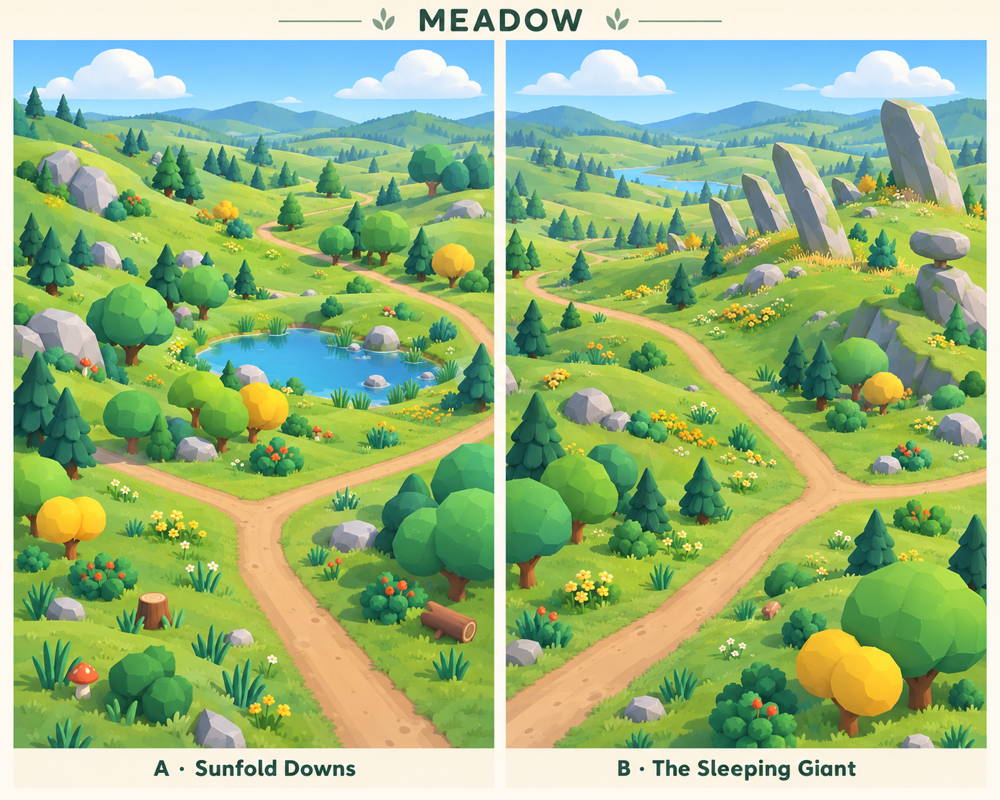
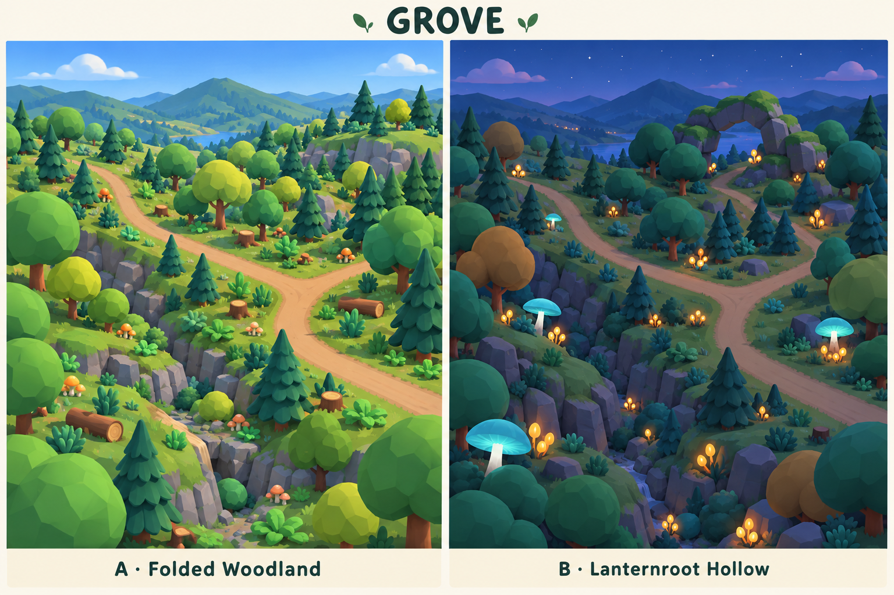
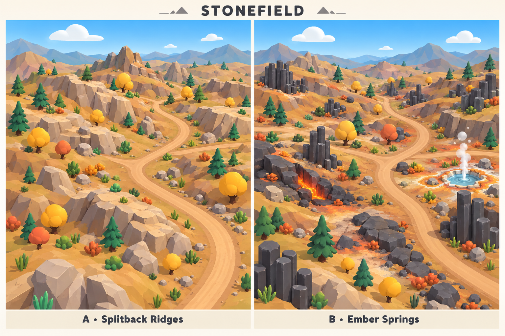
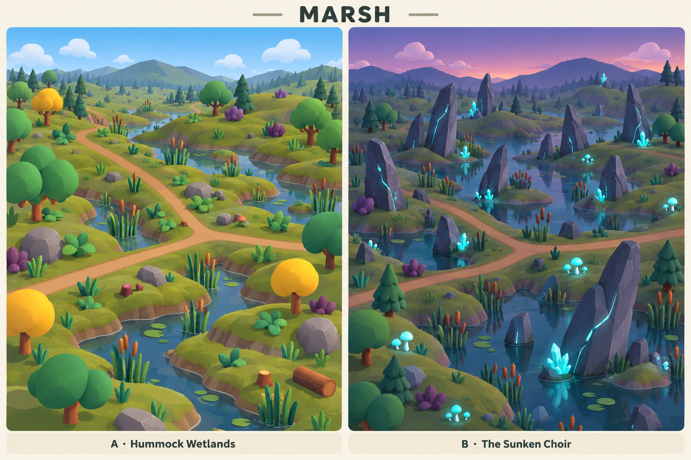
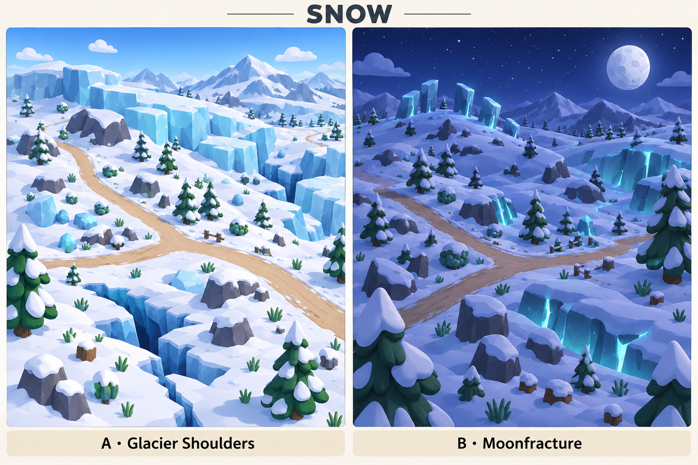

Meadow
Sunfold Downs · The Sleeping Giant


Open terrain, flower patches and a rare buried-stone landmark.
Five terrain concepts for Geo Pets World. Each landscape comparison board contains two portrait views: a grounded environment on the left and a restrained fantasy landmark on the right. Select any image to open its full-size original.
Sunfold Downs · The Sleeping Giant

Open terrain, flower patches and a rare buried-stone landmark.
Folded Woodland · Lanternroot Hollow

Layered trees and gullies, with one gentle luminous focal point.
Splitback Ridges · Ember Springs

Faceted rock relief with small heat and mineral accents.
Hummock Wetlands · The Sunken Choir

Dry routes weave through water and raised ground.
Glacier Shoulders · Moonfracture

Broad glacier faces and readable roads across sculpted snow.